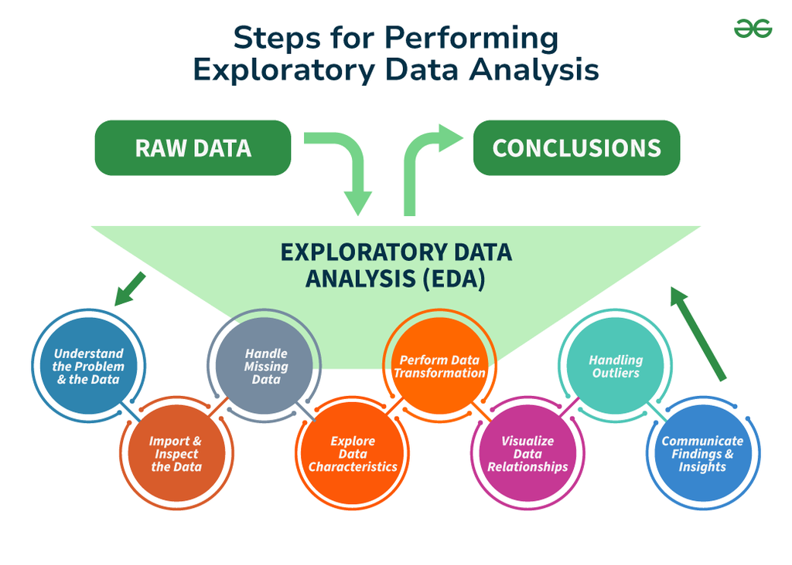
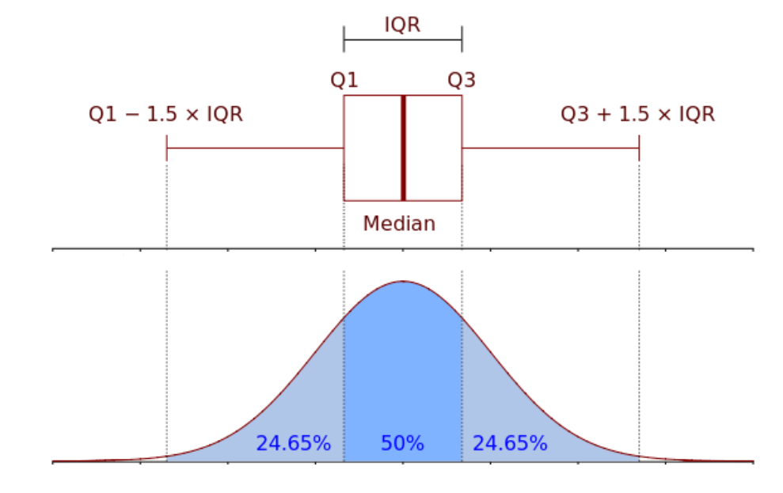
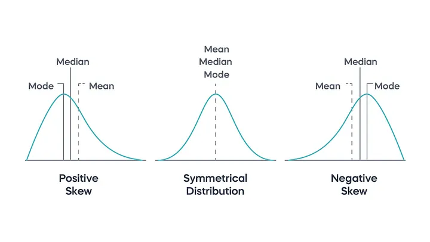
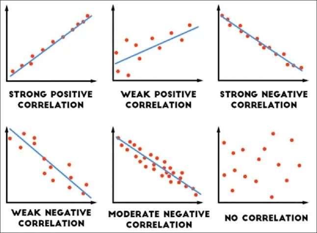
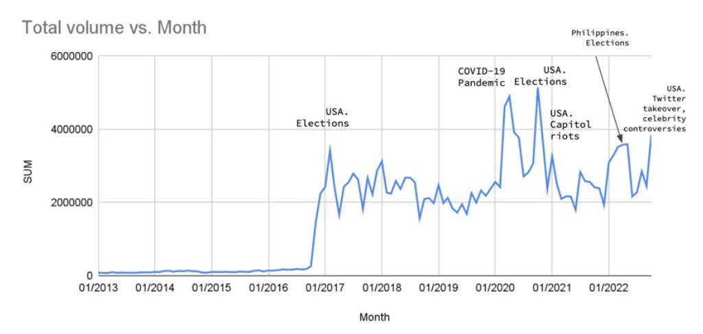
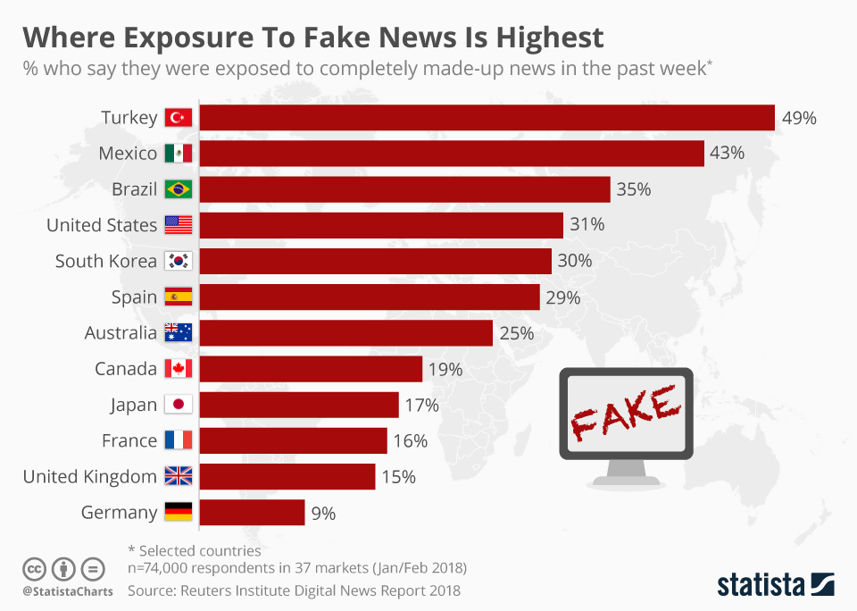
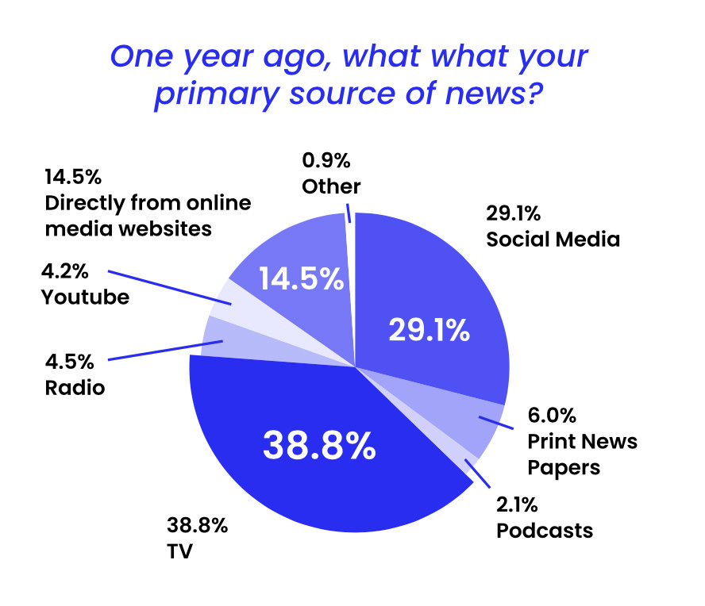
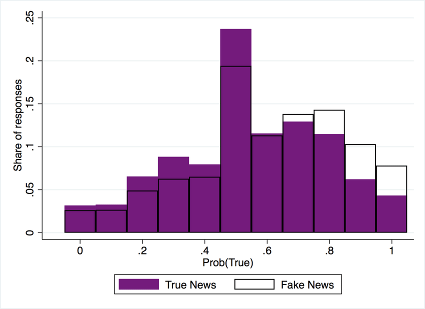
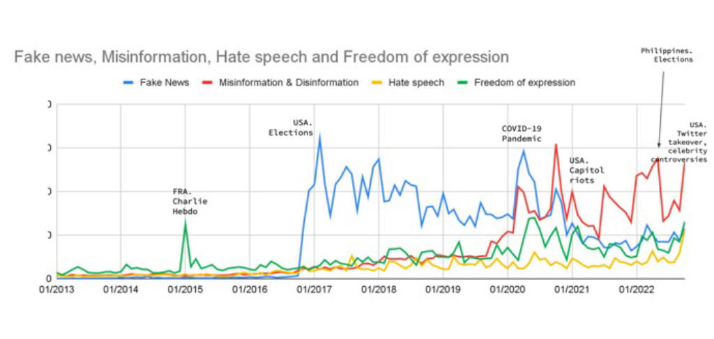

📚 EDA and Patterns
We have data….what can we do with it?
Exploratory Data Analysis (EDA) helps us:
By taking time to explore the data first, we challenge our assumptions, refine our questions, and set the stage for more accurate and meaningful analysis. EDA isn’t just a step—it’s where curiosity meets critical thinking.
 Source & Optional Reading: EDA, geeksforgeeks
💡 This lesson is entirely focused on concepts—we will not be coding yet. Instead, we will build a strong understanding of how to think about data before conducting complex analysis with it.
What does the data look like? (Basic structure, data types, missing values).
Are there errors or inconsistencies? (Duplicates, incorrect formatting, null values).
How is the data distributed? (Skewness, normality, extreme values).
Are there relationships between variables? (Correlations, categorical trends, time-based patterns).
🔹 EDA as a Tool for Data Inspection
Before diving into data cleaning and issue detection, we first need to inspect the dataset to understand its structure, data types, and general properties. This initial assessment is a crucial part of EDA because it helps us determine:
By understanding these aspects before detecting issues, we ensure that our cleaning and analysis efforts are well-informed.
1️⃣ Understanding Dataset Structure
One of the first steps in EDA is inspecting the dataset’s dimensions and general layout.
📌 Key Questions to Ask
🔹 How many rows and columns does the dataset have?
🔹 What types of variables are present (numerical, categorical, text-based)?
🔹 Are there any immediately visible inconsistencies or patterns?
💡 Example:
A dataset with millions of rows might require optimization techniques before analysis.
A dataset with only a few columns may need additional feature engineering to be useful.
2️⃣ Checking Data Types
Every dataset consists of different types of data, and recognizing them early helps us determine which operations are possible.
Data Type |
Description |
Example Columns |
|---|---|---|
Numerical |
Continuous or discrete numbers. |
|
Categorical |
Distinct groups or labels. |
|
Text (String) |
Free-form text. |
|
Datetime |
Timestamps or date-related values. |
|
Boolean |
True/False values. |
|
💡 Example: If timestamp is stored as a string instead of a datetime object, it won’t be possible to analyze time-based trends without first converting it.
3️⃣ Initial Data Summarization
After inspecting the structure and data types, the next step is to generate summary statistics to get a high-level view of numerical and categorical variables.
📌 Key Metrics to Examine
Metric |
Why It’s Important |
|---|---|
Count |
Shows how many non-null values exist in each column. |
Mean, Median |
Helps understand the average values of numerical data. |
Standard Deviation |
Indicates how spread out the data is. |
Minimum & Maximum |
Helps detect extreme values and potential outliers. |
Most Frequent Categories |
Useful for understanding categorical distributions. |
💡 Example: If followers has a mean of 30,000 but a median of 1,500, this suggests a few accounts have extremely high follower counts, indicating skewed distribution.
4️⃣ Exploring Unique Values in Categorical Data
For categorical variables, understanding the number of unique values is key to detecting inconsistencies and ensuring proper encoding.
💡 Example: If language contains values like "English", "ENG", and "en", these should be standardized to ensure consistency.
🚀 Summary: Why This Inspection Matters
🔹 Common Data Issues EDA Helps Detect
Before making sense of data, we need to detect potential issues that could affect analysis. EDA helps us clean and prepare data before diving into complex models or visualizations.
Common Data Issues in Raw Datasets
Real-world data is rarely perfect. Some of the most common problems include:
Issue |
Description |
Why It’s a Problem |
|---|---|---|
Missing Data |
Some values are absent or null ( |
Leads to incomplete analysis or biased results. |
Duplicates |
Some rows are repeated. |
Can inflate certain patterns or misrepresent trends. |
Inconsistent Formatting |
Different formats for dates, categories, or text. |
Makes data difficult to merge, filter, or analyze. |
Outliers |
Some values are extremely high or low compared to the rest. |
May distort averages, correlations, and model accuracy. |
Censored or Manipulated Data |
Some data points have been hidden or altered. |
Can introduce bias in decision-making. |
1️⃣ Identifying & Handling Missing Data
Missing data is one of the biggest challenges in data analysis.
🔍 Why Does Data Go Missing?
Human error – Data wasn’t collected or recorded properly.
Technical issues – System failures, incomplete uploads.
Intentional omissions – Some information wasn’t required or was removed.
✅ How Do We Handle Missing Data?
Scenario |
Possible Solution |
|---|---|
Missing completely at random |
Ignore or remove affected rows. |
Missing but predictable (e.g., missing age for infants) |
Impute values based on logical assumptions. |
Large amounts of missing data |
Use models or external sources to fill gaps. |
💡 Example: If a dataset contains missing timestamps, should we remove those rows or estimate missing dates based on known trends?
2️⃣ Detecting & Removing Duplicates
Duplicate rows can appear due to:
Data entry errors
Multiple downloads of the same dataset
Merging datasets with overlapping records
💡 Example: In a dataset of social media posts, duplicate tweets might skew engagement analysis.
✅ Handling Duplicates:
Check for exact duplicates (same values in all columns).
Check for partial duplicates (same user and timestamp but slightly different text).
Decide whether to keep or remove duplicates based on context.
3️⃣ Addressing Inconsistent Formatting
Datasets often contain inconsistent formats that make analysis difficult. These inconsistencies can appear in:
🔍 Types of Formatting Issues
Data Type |
Issue |
Example |
|---|---|---|
Dates |
Different formats used in the same column |
|
Text Data |
Spacing, capitalization, typos, mixed cases |
|
Categorical Data |
Multiple versions of the same category |
|
Numerical Data |
Different formats for decimals or thousands |
|
✅ How to Fix Formatting Issues
Issue |
Recommended Fix |
|---|---|
Inconsistent date formats |
Convert to a standard |
Case-sensitive inconsistencies |
Standardize to lowercase or title case. |
Typos in categories |
Use string matching or group rare categories. |
Decimal & thousands separators |
Ensure uniform numerical formatting. |
💡 Example: If a dataset has dates recorded as "MM/DD/YYYY" in some rows and "YYYY-MM-DD" in others, sorting by date won’t work properly until it’s standardized.
4️⃣ Understanding Outliers & Their Impact
An outlier is a value that is significantly higher or lower than the rest of the data.
✅ How Should We Handle Outliers?
Scenario |
Recommended Action |
|---|---|
Outlier is a valid extreme case (e.g., viral tweet) |
Keep it (it represents real behavior). |
Outlier is a data entry mistake |
Correct or remove it (e.g., a user with |
Outlier is affecting statistical modeling |
Apply log transformation or Winsorization. |
💡 Example: If a handful of social media posts have millions of likes, should we analyze them separately from typical posts?
5️⃣ Recognizing Censored & Manipulated Data
💡 Example: If engagement on a certain topic is unnaturally high, could it be the result of coordinated inauthentic behavior?
🔹 Recognizing Patterns in Data: Statistical Analysis
Once we have inspected the dataset and addressed basic data issues, the next step in Exploratory Data Analysis (EDA) is to identify patterns that can provide meaningful insights.
Statistical patterns help us understand how data is distributed and how different variables relate to each other. Recognizing these patterns early can guide our approach to data preprocessing, feature selection, and hypothesis testing.
📌 Key Statistical Patterns to Identify
Pattern Type |
What It Reveals |
Why It’s Important |
|---|---|---|
Central Tendency |
The “typical” value in the dataset (mean, median, mode). |
Helps summarize numerical data. |
Variability & Spread |
How much the data fluctuates (standard deviation, range, IQR). |
Shows if values are consistent or widely scattered. |
Skewness & Distribution |
Whether the data is symmetrical or skewed. |
Affects which statistical methods and transformations to apply. |
Correlations |
The relationship between two variables. |
Helps identify dependencies and possible causal links. |
Trends & Seasonality |
Patterns over time (e.g., daily, weekly, seasonal). |
Useful for forecasting and time-series analysis. |
1️⃣ Understanding Central Tendency (Mean, Median, Mode)
Central tendency refers to where the center of the data lies. The three main measures of central tendency are:
Measure |
Description |
Example Use Case |
|---|---|---|
Mean (Average) |
Sum of values divided by count. |
Used in engagement metrics like average likes per tweet. |
Median |
The middle value when sorted. |
Useful when data is skewed (e.g., median income). |
Mode |
The most frequently occurring value. |
Common for categorical data like most-used languages. |
💡 Example: If the mean number of likes on social media posts is 500 but the median is only 150, this suggests a small number of posts are going viral, skewing the average.
2️⃣ Measuring Variability & Spread
While central tendency tells us about the “typical” value, variability shows us how spread out the data is.
 Source & Optional Reading: IQR, The Data School
Metric |
What It Measures |
Why It’s Useful |
|---|---|---|
Range |
The difference between max and min values. |
Shows the full extent of variability. |
Interquartile Range (IQR) |
Spread between the 25th and 75th percentile. |
Helps detect outliers. |
Standard Deviation |
How far values deviate from the mean. |
Indicates whether data is concentrated or spread out. |
💡 Example: If likes have a high standard deviation, it means some posts get very few likes while others receive a large number, possibly in the thousands.
3️⃣ Identifying Skewness & Distribution
The shape of the data distribution can impact analysis, especially for numerical features.
 Source & Optional Reading: Understanding Measures of Central Tendency, Medium
Distribution Type |
Characteristics |
Impact on Analysis |
|---|---|---|
Normal (Symmetrical) |
Mean ≈ Median ≈ Mode. Bell-shaped curve. |
Many statistical methods assume normality. |
Right-Skewed (Positive Skew) |
Long right tail. Mean > Median. |
Common in engagement metrics (most posts get few likes, some go viral). |
Left-Skewed (Negative Skew) |
Long left tail. Mean < Median. |
Less common but can appear in certain financial or medical data. |
💡 Example: Social media engagement metrics like followers are typically right-skewed because a few influencers have millions of followers, while most users have far fewer.
4️⃣ Detecting Correlations Between Variables
A correlation measures how two variables are related.
 Source & Optional Reading: Correlation, Medium
Correlation Type |
What It Means |
Example |
|---|---|---|
Positive Correlation |
When one value increases, the other also increases. |
More followers → More likes. |
Negative Correlation |
When one value increases, the other decreases. |
More spam-like behavior → Fewer shares. |
No Correlation |
No clear relationship. |
Tweet length and likes may be unrelated. |
💡 Example: If followers and likes have a strong positive correlation, it suggests that more influential users get more engagement.
5️⃣ Recognizing Trends & Seasonality in Time-Based Data
If data includes timestamps, we can analyze trends over time to detect:
Daily, weekly, or seasonal trends.
Engagement spikes or declines over time.
Recurring cycles (e.g., weekend activity vs. weekday activity).
 Source & Optional Reading: Fake News!, U. South Carolina
💡 Example: Total volume of the conversation around misinformation/disinformation-related terms. The graph shows the evolution of online mentions of “fake news” in the last 10 years.
🔹 Recognizing Patterns in Data: Visualization
While statistical measures help summarize data numerically, visual representations allow us to quickly spot patterns that might not be obvious from raw numbers alone.
Graphical representations help us:
Histograms confirm distribution shapes detected by skewness analysis.
Scatter plots reinforce correlation insights.
Boxplots highlight variability and outliers found in IQR analysis.
This section introduces visualization techniques in order of complexity, starting with simple frequency plots and moving toward advanced relational and time-series visualizations.
📌 Key Visualization Techniques (Simplified)
Chart Type |
Use Case |
What It Reveals |
|---|---|---|
Bar Chart |
Comparison of categorical variables. |
Shows relative frequencies or counts of categories. |
Pie Chart |
Proportional comparison of categories. |
Highlights dominant categories but can be misleading with many categories. |
Histogram |
Distribution of a single numerical variable. |
Shows skewness, normality, gaps, and multi-modal trends. |
Boxplot |
Summary of numerical distributions with quartiles. |
Highlights outliers and variability. |
Density Plot (KDE Plot) |
Smoothed version of a histogram. |
Visualizes probability distributions. |
Scatter Plot |
Relationship between two numerical variables. |
Detects correlations, clusters, and trends. |
Line Plot |
Patterns over time. |
Identifies time-series trends, seasonality, and spikes. |
1️⃣ Bar Charts: Comparing Categories (Simple)
Best for: Comparing counts or averages of categorical variables.
 Source & Optional Reading: Where exposure to fake news is highest, Statista
💡 Example Use Cases:
Comparing misinformation vs. fact-based tweets to see which receives more engagement.
Analyzing top 5 most shared misinformation sources.
Examining language distribution in the dataset.
2️⃣ Pie Charts: Showing Proportions (Still Simple but Limited Use)
Best for: Showing percentages or proportions of categorical data.
 Source & Optional Reading: State of Misinfo, The Trusted Web
💡 Example Use Cases:
Proportion of misinformation vs. reliable sources.
Distribution of content types (text-only, images, videos).
3️⃣ Histograms: Understanding Data Distributions
Best for: Analyzing the spread of numerical data by grouping values into bins.
 Source & Optional Reading: The Fake News Effect, Thaler
💡 Example Use Cases:
Checking if likes, shares, and comments follow a normal distribution.
Identifying skewed engagement patterns in viral posts.
4️⃣ Boxplots: Identifying Outliers and Variability
Best for: Comparing distributions across categories & detecting outliers.
💡 Example Use Cases:
Comparing engagement levels between misinformation vs. fact-based content.
Checking for extreme outliers in shares and comments.
5️⃣ Scatter Plots: Finding Relationships Between Two Variables
Best for: Detecting correlations, clusters, and anomalies between two numerical variables.
💡 Example Use Cases:
Checking if accounts with more followers get more likes (correlation).
Identifying clusters of bot-like behavior (e.g., many tweets but low engagement).
6️⃣ Line Plots: Tracking Trends Over Time
Best for: Showing patterns over time, detecting trends and seasonality.
 Source & Optional Reading: Fake News!, U. South Carolina
💡 Example Use Cases:
Tracking spikes in misinformation engagement over election cycles.
Analyzing daily vs. weekly posting behavior of misinformation sources.
These are a few of many example use cases for these visualization types. Check out other types here: The Data Visualization Catalogue
🚀 Looking Ahead: More Complex Visualizations Beyond the standard visualizations covered here, more advanced techniques are useful for analyzing misinformation networks, amplification patterns, and content spread. In later lessons, we will introduce:
🔹 Key Takeaways from EDA
In this lesson, we explored the foundations of Exploratory Data Analysis (EDA) and its critical role in understanding datasets before applying statistical models or drawing conclusions.
With this knowledge, you’ll be ready for the full guided Python walkthrough in Lesson 7, where we’ll explore patterns in an actual dataset, mirroring the concepts from this lesson.
📌 Let’s dive into Python and start coding! 🐍💻